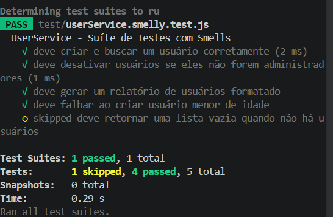

A suíte original em test/userService.smelly.test.js passava em todos os testes, mas trazia vários sinais de fragilidade. Abaixo descrevo os três test smells mais relevantes que encontrei, por que cada um é considerado um “mau cheiro” e qual o risco que ele representa para o projeto.
No teste “deve desativar usuários se eles não forem administradores” existe um for percorrendo uma lista de usuários e um if/else escolhendo qual expect rodar para cada caso. O ESLint sinaliza isso com a regra jest/no-conditional-expect.
Por que é um mau cheiro: o teste deixa de ser uma especificação de um comportamento e passa a replicar a própria lógica do código sob teste. Se o if nunca for satisfeito (por exemplo, porque os dados de entrada mudaram), o expect simplesmente não é executado e o teste passa sem ter verificado nada. Risco: falsos positivos — a suíte mostra verde mesmo com bug em produção, exatamente o problema que vimos no trabalho de mutação.
O teste “deve falhar ao criar usuário menor de idade” envolve a chamada em um try/catch e coloca o expect só dentro do catch. Se a função parar de lançar a exceção (por exemplo, alguém remover a validação de idade), o catch nunca executa, o expect nunca roda e o teste passa.
Por que é um mau cheiro: o teste expressa “espero que isso lance erro”, mas na prática diz “se lançar, conferir a mensagem”. Risco: uma regra de negócio crítica (proibir cadastro de menor de idade) pode ser quebrada sem que a suíte avise. É um caso clássico de teste que cumpre o linter de cobertura mas não protege o sistema.
O teste “deve criar e buscar um usuário corretamente” exercita dois comportamentos diferentes (criar e buscar) em um único bloco — um Eager Test. Já o teste “deve gerar um relatório de usuários formatado” compara a string completa de uma linha do relatório, incluindo vírgulas, espaços e quebra de linha, o que caracteriza um Fragile Test.
Por que é um mau cheiro: testes ansiosos dificultam descobrir o que falhou (um erro em “buscar” aparece como falha no teste de “criar”) e testes frágeis quebram a cada mudança cosmética no código de produção. Risco: manutenção cara — alterar um espaço na formatação do relatório quebra o teste sem que o comportamento tenha mudado, e a equipe perde confiança na suíte.
Além desses, ainda há um test.skip com um “TODO: implementar depois”, que o ESLint reporta como jest/no-disabled-tests — um Ignored Test que tende a apodrecer no repositório.
Escolhi o teste mais problemático da suíte — o que junta lógica condicional, loop e dois expect que dependem de um if — para mostrar o antes e depois. Os arquivos completos estão em test/userService.smelly.test.js (original) e test/userService.clean.test.js (refatorado).
test('deve desativar usuários se eles
não forem administradores', () => {
const usuarioComum = userService.createUser(
'Comum', 'comum@teste.com', 30);
const usuarioAdmin = userService.createUser(
'Admin', 'admin@teste.com', 40, true);
const todosOsUsuarios = [usuarioComum,
usuarioAdmin];
for (const user of todosOsUsuarios) {
const resultado =
userService.deactivateUser(user.id);
if (!user.isAdmin) {
expect(resultado).toBe(true);
const atualizado =
userService.getUserById(user.id);
expect(atualizado.status).toBe('inativo');
} else {
expect(resultado).toBe(false);
}
}
});
test('deve desativar usuário comum', () => {
// Arrange
const usuarioComum = userService.createUser(
'Comum', 'comum@teste.com', 30);
// Act
const desativou =
userService.deactivateUser(usuarioComum.id);
const atualizado =
userService.getUserById(usuarioComum.id);
// Assert
expect(desativou).toBe(true);
expect(atualizado.status).toBe('inativo');
});
test('não deve desativar usuário
administrador', () => {
// Arrange
const admin = userService.createUser(
'Admin', 'admin@teste.com', 40, true);
// Act
const desativou =
userService.deactivateUser(admin.id);
const atualizado =
userService.getUserById(admin.id);
// Assert
expect(desativou).toBe(false);
expect(atualizado.status).toBe('ativo');
});
for e do if/else elimina a Conditional Test Logic, fazendo o aviso jest/no-conditional-expect sumir e garantindo que cada expect sempre execute.// Arrange / Act / Assert) deixa o teste mais legível e ensina, em quem ler, o que é setup, o que é a ação e o que é verificação.status continua 'ativo') reforça a verificação de comportamento e mataria um mutante que retornasse false mas mesmo assim mudasse o status.
A mesma lógica foi aplicada nos outros smells:
o teste do try/catch virou expect(fn).toThrow('O usuário deve ser maior de idade.'), garantindo que a ausência da exceção quebra o teste;
o teste “criar e buscar” foi quebrado em “deve criar usuário com id e status ativo por padrão” e “deve buscar usuário por id existente”;
o teste do relatório passou a usar toContain com fragmentos estáveis em vez de comparar a string inteira com \n;
e o test.skip foi implementado como um teste real de relatório vazio.
O ESLint foi configurado com o plugin eslint-plugin-jest no arquivo eslint.config.mjs (formato flat config) com as regras pedidas no enunciado: jest/no-disabled-tests (warn), jest/no-conditional-expect (error) e jest/no-identical-title (error). Rodando npx eslint . na suíte original, a ferramenta apontou exatamente os mesmos pontos que eu havia anotado na análise manual:
test\userService.smelly.test.js 44:9 error Avoid calling `expect` conditionally` jest/no-conditional-expect 46:9 error Avoid calling `expect` conditionally` jest/no-conditional-expect 49:9 error Avoid calling `expect` conditionally` jest/no-conditional-expect 73:7 error Avoid calling `expect` conditionally` jest/no-conditional-expect 77:3 warning Tests should not be skipped jest/no-disabled-tests ✖ 5 problems (4 errors, 1 warning)

npx eslint . na suíte original.
Os quatro erros nas linhas 44, 46, 49 e 73 correspondem aos expect que dependem do if/else dentro do for (smell 1.1) e ao expect dentro do catch (smell 1.2). O warning da linha 77 é o test.skip com TODO. Depois da refatoração, rodando o ESLint apenas no novo arquivo test/userService.clean.test.js, a ferramenta não reporta nenhum erro nem aviso, e npm test continua passando tanto na suíte antiga quanto na nova — provando que o comportamento foi preservado.
Esse fluxo mostra bem o ganho do linter: o que eu levei minutos para identificar lendo o arquivo, o ESLint identifica em segundos, com posição exata (arquivo, linha, coluna) e com uma mensagem clara que aponta para a regra violada. Isso permite acoplar a detecção a um pre-commit hook ou ao CI, transformando a caça aos smells em uma rotina automática em vez de depender de revisão manual.
Olhando para a suíte original e para a refatorada lado a lado, fica claro que “todos os testes passam” não é, sozinho, uma garantia de qualidade. A suíte smelly tinha 5 testes verdes, mas escondia bugs em potencial: um expect que podia não executar, uma exceção que podia parar de ser lançada sem ninguém notar, e uma asserção de string inteira que quebraria com qualquer mudança cosmética. Foi exatamente esse tipo de fragilidade que o trabalho de mutação no semestre passado tinha exposto — agora, atacamos a causa raiz.
A combinação de boas práticas (padrão AAA, um comportamento por teste, asserções de comportamento em vez de implementação) com uma ferramenta de análise estática (ESLint + eslint-plugin-jest) cria um ciclo virtuoso: o desenvolvedor escreve testes mais claros, o linter impede a regressão dos smells em pull requests futuros, e a suíte continua confiável à medida que o projeto cresce. Para o ciclo de vida do software isso significa testes que envelhecem bem, menos custo de manutenção e, principalmente, uma rede de proteção que de fato detecta bugs em vez de só dar uma falsa sensação de cobertura.